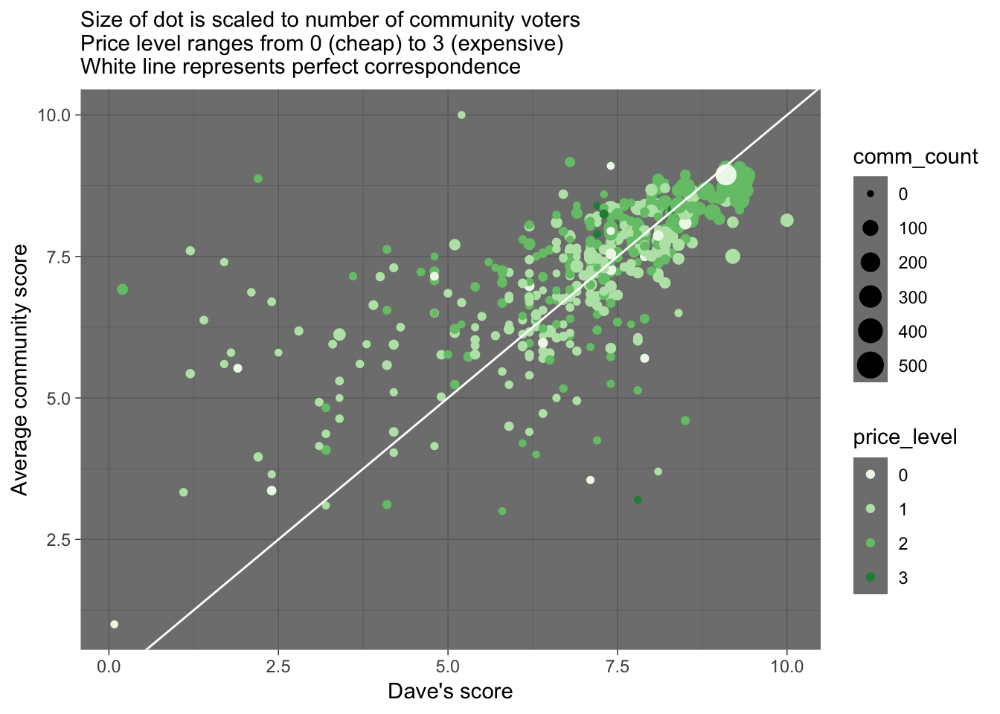
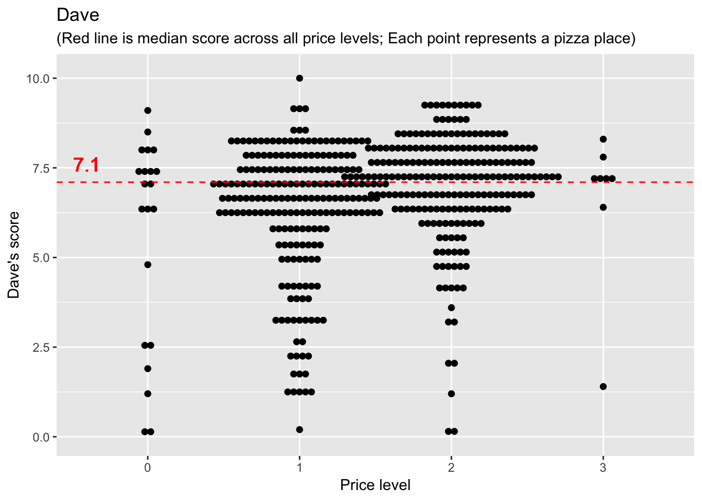
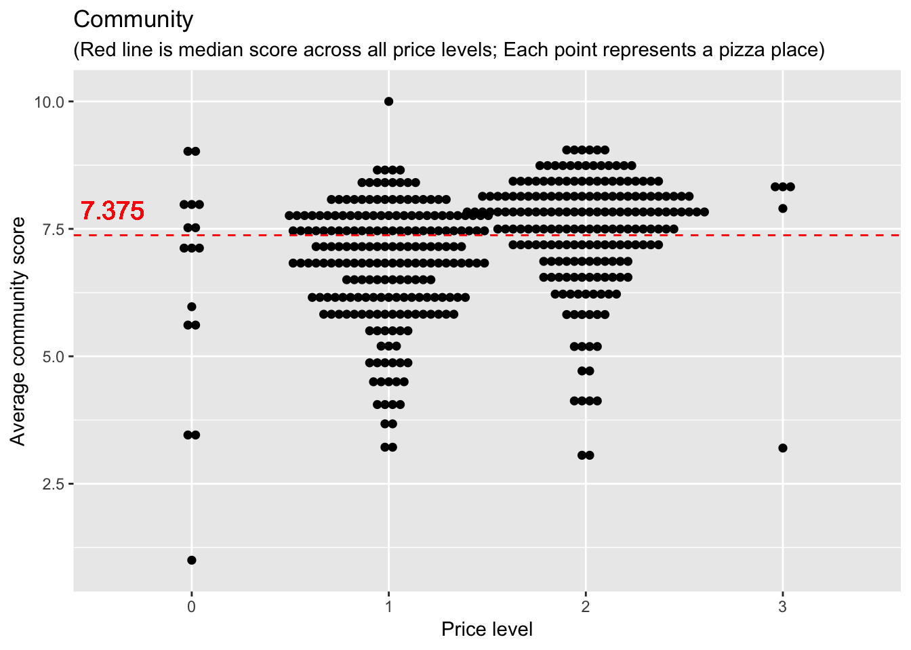
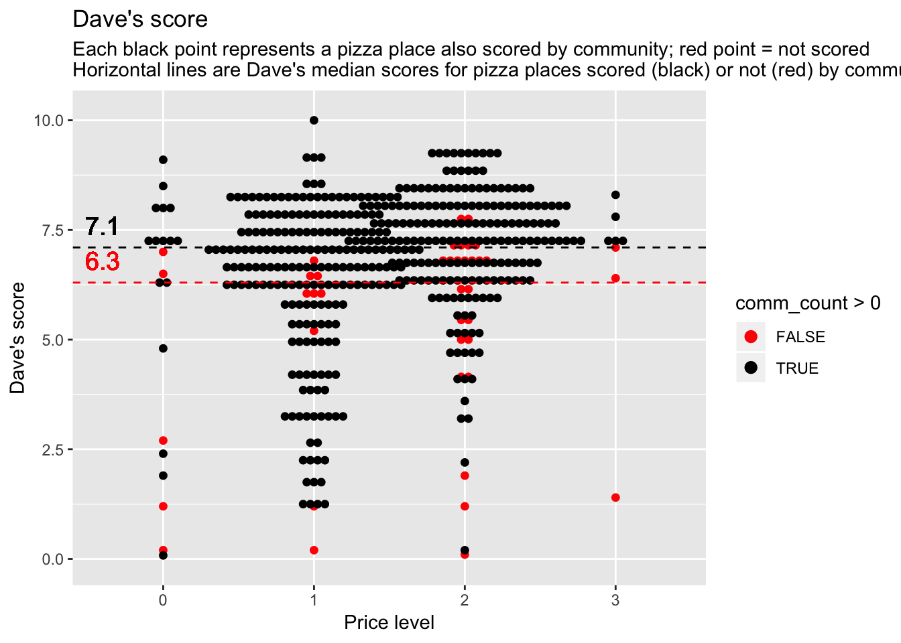
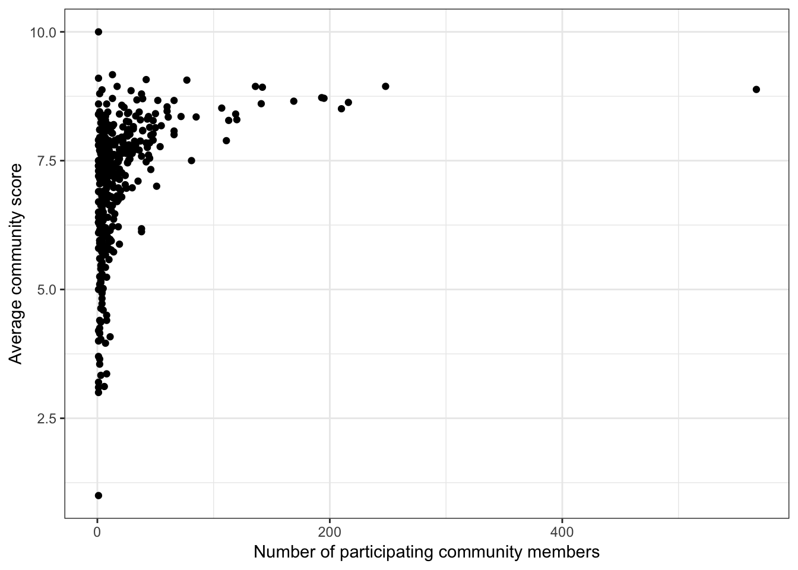

I selected the ‘Barstool’ sports dataset to work with in this exercise. This dataset has pizza ratings from three sectors (critic, public, Barstool staff), pricing, location, and geo-location.
I’ll examine the structure of the dataset and pick out a subset of variables relevant for answering interesting questions with visualizations.
## Observations: 463
## Variables: 22
## $ name <chr> "Pugsley's Pizza", "William…
## $ address1 <chr> "590 E 191st St", "265 Unio…
## $ city <chr> "Bronx", "Brooklyn", "New Y…
## $ zip <dbl> 10458, 11211, 10017, 10036,…
## $ country <chr> "US", "US", "US", "US", "US…
## $ latitude <dbl> 40.85877, 40.70808, 40.7537…
## $ longitude <dbl> -73.88484, -73.95090, -73.9…
## $ price_level <dbl> 1, 1, 1, 2, 2, 1, 1, 1, 2, …
## $ provider_rating <dbl> 4.5, 3.0, 4.0, 4.0, 3.0, 3.…
## $ provider_review_count <dbl> 121, 281, 118, 1055, 143, 2…
## $ review_stats_all_average_score <dbl> 8.011111, 7.774074, 5.66666…
## $ review_stats_all_count <dbl> 27, 27, 9, 2, 1, 4, 5, 17, …
## $ review_stats_all_total_score <dbl> 216.3, 209.9, 51.0, 11.2, 7…
## $ review_stats_community_average_score <dbl> 7.992000, 7.742308, 5.76250…
## $ review_stats_community_count <dbl> 25, 26, 8, 0, 0, 3, 4, 16, …
## $ review_stats_community_total_score <dbl> 199.8, 201.3, 46.1, 0.0, 0.…
## $ review_stats_critic_average_score <dbl> 8.8, 0.0, 0.0, 4.3, 0.0, 0.…
## $ review_stats_critic_count <dbl> 1, 0, 0, 1, 0, 0, 0, 0, 0, …
## $ review_stats_critic_total_score <dbl> 8.8, 0.0, 0.0, 4.3, 0.0, 0.…
## $ review_stats_dave_average_score <dbl> 7.7, 8.6, 4.9, 6.9, 7.1, 3.…
## $ review_stats_dave_count <dbl> 1, 1, 1, 1, 1, 1, 1, 1, 1, …
## $ review_stats_dave_total_score <dbl> 7.7, 8.6, 4.9, 6.9, 7.1, 3.…I don’t understand (from the data or from the dataset definitions) what the provider ratings are, so I’m going to just use the community, critic, and Dave (barstool staff, it seems) scores. The total score is just the average score multiplied by the count, so I’ll drop the total score columns. Some of the names are very long, so I’ll shorten them for ease of use.
barstool2 <- barstool %>%
dplyr::select(name, city, zip, latitude, longitude, price_level, comm_avg = review_stats_community_average_score, comm_count = review_stats_community_count, crit_avg = review_stats_critic_average_score, crit_count = review_stats_critic_count, dave_avg = review_stats_dave_average_score, dave_count = review_stats_dave_count) %>%
mutate_at(c("name", "city", "zip"), as.factor)Let’s check the data to see if there is anything funny to make note of
## name city zip
## Joe's Pizza : 3 New York :251 10019 : 25
## Bonanno's New York Pizzeria: 2 Brooklyn : 20 10012 : 22
## Justino's Pizzeria : 2 Boston : 13 10014 : 22
## Kiss My Slice : 2 Las Vegas : 11 10011 : 17
## Little Italy Pizza : 2 Minneapolis: 8 10036 : 16
## Lucali : 2 Atlanta : 6 10003 : 14
## (Other) :450 (Other) :154 (Other):347
## latitude longitude price_level comm_avg
## Min. :25.79 Min. :-122.41 Min. :0.00 Min. : 0.000
## 1st Qu.:40.72 1st Qu.: -74.09 1st Qu.:1.00 1st Qu.: 6.075
## Median :40.75 Median : -73.99 Median :1.00 Median : 7.225
## Mean :40.19 Mean : -77.44 Mean :1.46 Mean : 6.457
## 3rd Qu.:40.78 3rd Qu.: -73.97 3rd Qu.:2.00 3rd Qu.: 7.873
## Max. :45.00 Max. : -70.09 Max. :3.00 Max. :10.000
## NA's :2 NA's :2
## comm_count crit_avg crit_count dave_avg
## Min. : 0.00 Min. : 0.0000 Min. :0.0000 Min. : 0.080
## 1st Qu.: 3.00 1st Qu.: 0.0000 1st Qu.:0.0000 1st Qu.: 6.200
## Median : 7.00 Median : 0.0000 Median :0.0000 Median : 7.100
## Mean : 17.87 Mean : 0.9717 Mean :0.1425 Mean : 6.623
## 3rd Qu.: 18.00 3rd Qu.: 0.0000 3rd Qu.:0.0000 3rd Qu.: 7.800
## Max. :567.00 Max. :11.0000 Max. :5.0000 Max. :10.000
##
## dave_count
## Min. :1
## 1st Qu.:1
## Median :1
## Mean :1
## 3rd Qu.:1
## Max. :1
## # There are only two records with NA's in the data--the NA's are in the latitude & longitude columns
# Some pizza place names are represented in more than one row of data
# There is at least one funny zip code: 1748 (has 4 digits instead of 5)
# There are cases where comm_count and crit_count are 0. The corresponding average scores for these records should be changed to NA, not zero
# When counts are zero, change the average score to zero (because it means that no one scored the place)
barstool2$crit_avg[barstool2$crit_count == 0] # first check what the average scores are when the counts are zero--are there cases when actual scores are provided, which might indicate that the count is incorrect? The values are all zero. I should change them to NA## [1] 0 0 0 0 0 0 0 0 0 0 0 0 0 0 0 0 0 0 0 0 0 0 0 0 0 0 0 0 0 0 0 0 0 0 0
## [36] 0 0 0 0 0 0 0 0 0 0 0 0 0 0 0 0 0 0 0 0 0 0 0 0 0 0 0 0 0 0 0 0 0 0 0
## [71] 0 0 0 0 0 0 0 0 0 0 0 0 0 0 0 0 0 0 0 0 0 0 0 0 0 0 0 0 0 0 0 0 0 0 0
## [106] 0 0 0 0 0 0 0 0 0 0 0 0 0 0 0 0 0 0 0 0 0 0 0 0 0 0 0 0 0 0 0 0 0 0 0
## [141] 0 0 0 0 0 0 0 0 0 0 0 0 0 0 0 0 0 0 0 0 0 0 0 0 0 0 0 0 0 0 0 0 0 0 0
## [176] 0 0 0 0 0 0 0 0 0 0 0 0 0 0 0 0 0 0 0 0 0 0 0 0 0 0 0 0 0 0 0 0 0 0 0
## [211] 0 0 0 0 0 0 0 0 0 0 0 0 0 0 0 0 0 0 0 0 0 0 0 0 0 0 0 0 0 0 0 0 0 0 0
## [246] 0 0 0 0 0 0 0 0 0 0 0 0 0 0 0 0 0 0 0 0 0 0 0 0 0 0 0 0 0 0 0 0 0 0 0
## [281] 0 0 0 0 0 0 0 0 0 0 0 0 0 0 0 0 0 0 0 0 0 0 0 0 0 0 0 0 0 0 0 0 0 0 0
## [316] 0 0 0 0 0 0 0 0 0 0 0 0 0 0 0 0 0 0 0 0 0 0 0 0 0 0 0 0 0 0 0 0 0 0 0
## [351] 0 0 0 0 0 0 0 0 0 0 0 0 0 0 0 0 0 0 0 0 0 0 0 0 0 0 0 0 0 0 0 0 0 0 0
## [386] 0 0 0 0 0 0 0 0 0 0 0 0 0 0 0 0## [1] 401barstool2$crit_avg[barstool2$crit_count == 0] <- NA
barstool2$comm_avg[barstool2$comm_count == 0] # these are also all zero, and should be changed to NA## [1] 0 0 0 0 0 0 0 0 0 0 0 0 0 0 0 0 0 0 0 0 0 0 0 0 0 0 0 0 0 0 0 0 0 0 0
## [36] 0 0 0 0 0 0## [1] 41barstool2$comm_avg[barstool2$comm_count == 0] <- NA
# Check the summary again...
summary(barstool2) # there are now 41 NA's for comm_avg and 401 NA's for crit_avg--that is correct## name city zip
## Joe's Pizza : 3 New York :251 10019 : 25
## Bonanno's New York Pizzeria: 2 Brooklyn : 20 10012 : 22
## Justino's Pizzeria : 2 Boston : 13 10014 : 22
## Kiss My Slice : 2 Las Vegas : 11 10011 : 17
## Little Italy Pizza : 2 Minneapolis: 8 10036 : 16
## Lucali : 2 Atlanta : 6 10003 : 14
## (Other) :450 (Other) :154 (Other):347
## latitude longitude price_level comm_avg
## Min. :25.79 Min. :-122.41 Min. :0.00 Min. : 1.000
## 1st Qu.:40.72 1st Qu.: -74.09 1st Qu.:1.00 1st Qu.: 6.400
## Median :40.75 Median : -73.99 Median :1.00 Median : 7.375
## Mean :40.19 Mean : -77.44 Mean :1.46 Mean : 7.085
## 3rd Qu.:40.78 3rd Qu.: -73.97 3rd Qu.:2.00 3rd Qu.: 7.900
## Max. :45.00 Max. : -70.09 Max. :3.00 Max. :10.000
## NA's :2 NA's :2 NA's :41
## comm_count crit_avg crit_count dave_avg
## Min. : 0.00 Min. : 4.000 Min. :0.0000 Min. : 0.080
## 1st Qu.: 3.00 1st Qu.: 6.228 1st Qu.:0.0000 1st Qu.: 6.200
## Median : 7.00 Median : 7.100 Median :0.0000 Median : 7.100
## Mean : 17.87 Mean : 7.256 Mean :0.1425 Mean : 6.623
## 3rd Qu.: 18.00 3rd Qu.: 8.100 3rd Qu.:0.0000 3rd Qu.: 7.800
## Max. :567.00 Max. :11.000 Max. :5.0000 Max. :10.000
## NA's :401
## dave_count
## Min. :1
## 1st Qu.:1
## Median :1
## Mean :1
## 3rd Qu.:1
## Max. :1
## # Since price levels only range from 0 to 3 as integers, I'll convert this variable to an ordered factor for graphing
barstool2$price_level <- factor(barstool2$price_level)
# Extract the data records for pizza places represented more than once in the dataset, to see if they are duplicate records
dup_names <- barstool2 %>%
group_by(name) %>%
filter(n() > 1) %>%
arrange(name)
dup_names[, c("name", "zip", "latitude", "longitude")]## # A tibble: 21 x 4
## # Groups: name [10]
## name zip latitude longitude
## <fct> <fct> <dbl> <dbl>
## 1 Bonanno's New York Pizzeria 89109 36.1 -115.
## 2 Bonanno's New York Pizzeria 89109 36.1 -115.
## 3 Joe's Pizza 90401 34.0 -118.
## 4 Joe's Pizza 10014 40.7 -74.0
## 5 Joe's Pizza 10011 40.7 -74.0
## 6 Justino's Pizzeria 10019 40.8 -74.0
## 7 Justino's Pizzeria 10004 40.7 -74.0
## 8 Kiss My Slice 10022 40.8 -74.0
## 9 Kiss My Slice 10018 40.8 -74.0
## 10 Little Italy Pizza 10036 40.8 -74.0
## # … with 11 more rowsHere are some key things I’ve learned so far from examining the Barstool data:
It might be interesting to examine the scores grouped by location. Let’s first see what sample sizes are working with –are the data pretty evenly distributed among cities, or among zip codes?
##
## 1 2 3 4 6 8 11 13 20 251
## 68 9 6 5 6 1 1 1 1 1barstool2 %>%
group_by(city) %>%
tally() %>%
top_n(5) %>% # which cities had the highest number of rated pizza places? New York City
arrange(desc(n))## # A tibble: 5 x 2
## city n
## <fct> <int>
## 1 New York 251
## 2 Brooklyn 20
## 3 Boston 13
## 4 Las Vegas 11
## 5 Minneapolis 8##
## 1 2 3 4 5 6 7 8 9 10 11 14 16 17 22 25
## 116 22 8 5 5 4 2 2 2 1 2 2 1 1 2 1barstool2 %>%
group_by(zip) %>%
tally() %>%
top_n(5) %>% # which zip had the highest number of rated pizza places? zip code 10019 (n = 25 rated places)
arrange(desc(n))## # A tibble: 5 x 2
## zip n
## <fct> <int>
## 1 10019 25
## 2 10012 22
## 3 10014 22
## 4 10011 17
## 5 10036 16I originally thought I might be able to do something interesting with pizza place ratings by city or zip code, but it looks like most cities and zip codes only had one rated pizza place. Among cities, New York City had by far the largest number of rated pizza places (N = 251, with the next highest being Brooklyn with N = 20). Ratings were more evenly spread among zip codes (highest was N = 25 for zip code 10019, followed by N = 22 for zip codes 10012 & 10014). But with the zip codes, also, most (N = 116; 66% of zip codes) had just one rated pizza place.
There are too many cities/zip codes, and the data aren’t well spread among the cities/zip codes, so I don’t want to compare data by these location variables.
But here are some questions I can visually explore the data to answer…
We’ll look at this in a few different ways…
# scatterplot
ggplot(barstool2, aes(x = dave_avg, y = comm_avg, size = comm_count, color = price_level)) +
geom_point() +
scale_colour_brewer(palette = "Greens") +
theme_dark() +
geom_abline(color = "white") +
labs(x = "Dave's score", y = "Average community score", subtitle = "Size of dot is scaled to number of community voters \nPrice level ranges from 0 (cheap) to 3 (expensive) \nWhite line represents perfect correspondence") There is a pretty loose correspondence between Dave’s score and the community score for a pizza place. A few things we notice:
The community tends to give higher scores than Dave does, especially for the pizza places Dave dislikes
Dave and the community tend to agree more on the better pizza places
One of the best-scored pizza place by both Dave and the community (and most scored by the community) has a price level of zero.
Let’s find out what that cheap but good pizza place is…
# I'm guessing these filter values from the graph
dplyr::filter(barstool2, price_level==0, dave_avg > 8.25, comm_avg > 8.25, comm_count > 200) ## # A tibble: 1 x 12
## name city zip latitude longitude price_level comm_avg comm_count
## <fct> <fct> <fct> <dbl> <dbl> <fct> <dbl> <dbl>
## 1 Sauc… New … 10003 40.7 -74.0 0 8.94 248
## # … with 4 more variables: crit_avg <dbl>, crit_count <dbl>,
## # dave_avg <dbl>, dave_count <dbl>Sauce Pizzeria in New York is the best cheap pizza among the places scored. That’s my kind of pizza place.
Compare Dave’s and the community’s scores in other ways…
# dotplot
ggplot(barstool2) +
geom_dotplot(aes(x = price_level, y = dave_avg), binaxis='y', stackdir='center', dotsize=0.5) +
geom_hline(yintercept = median(barstool2$dave_avg, na.rm = TRUE), color = "red", linetype = "dashed") +
geom_text(x = 0.6, y = median(barstool2$dave_avg)+0.5, label = median(barstool2$dave_avg), size = 5, color = "red") +
labs(x = "Price level", y = "Dave's score", title = "Dave", subtitle = "(Red line is median score across all price levels; Each point represents a pizza place)")
ggplot(barstool2) +
geom_dotplot(aes(x = price_level, y = comm_avg), binaxis='y', stackdir='center', dotsize=0.5) +
geom_hline(yintercept = median(barstool2$comm_avg, na.rm = TRUE), color = "red", linetype = "dashed") +
geom_text(x = 0.6, y = median(barstool2$comm_avg, na.rm = TRUE)+0.5, label = median(barstool2$comm_avg, na.rm = TRUE), size = 5, color = "red") +
labs(x = "Price level", y = "Average community score", title = "Community", subtitle = "(Red line is median score across all price levels; Each point represents a pizza place)") Not much new insight here. We do see that the median community score is higher than Dave’s median score. BUT we don’t have community scores for all the pizza places that Dave scored, so it’s a big misleading to compare median values (for different datasets).
Is there anything interesting about the pizza places the community did NOT score?
comm_scored_med <- median(barstool2$dave_avg[barstool2$comm_count >0], na.rm = TRUE) # 422 values
comm_NOTscored_med <- median(barstool2$dave_avg[barstool2$comm_count ==0], na.rm = TRUE) # 41 values
ggplot(barstool2) +
geom_dotplot(aes(x = price_level, y = dave_avg, color = comm_count > 0, fill = comm_count >0), binaxis='y', stackdir='center', dotsize=0.5) +
geom_hline(yintercept = c(comm_scored_med, comm_NOTscored_med), color = c("black", "red"), linetype = "dashed") +
geom_text(x = 0.6, y = comm_scored_med+0.5, label = comm_scored_med, size = 5, color = "black") +
geom_text(x = 0.6, y = comm_NOTscored_med+0.5, label = comm_NOTscored_med, size = 5, color = "red") +
scale_color_manual(values = c("red", "black")) +
scale_fill_manual(values = c("red", "black")) +
labs(x = "Price level", y = "Dave's score", title = "Dave's score", subtitle = "Each black point represents a pizza place also scored by community; red point = not scored \nHorizontal lines are Dave's median scores for pizza places scored (black) or not (red) by community ") It looks like the pizza places the community did NOT score tended to be the pizza places that weren’t so good (based on Dave’s scores). It’s strange that Dave’s median for the pizza places the community DID score is still the same as Dave’s median overall (7.1, regardless of whether or not the community participated). I wonder if there were just a lot of pizza places that Dave scored that middle value (7.1), which then provides some buffer on the median score.
**Let’s check that out…
## [1] 25Yes, there were 25 pizza places that Dave scored 7.1. There were only 41 pizza places that the community didn’t score at all–and some of these were scored (by Dave) above 7.1. So it seems plausible that Dave’s median score could still remain 7.1 when omitting the pizza places NOT scored by the community.
I want to take a closer look at this relationship because it was a little difficult to see the pattern clearly in the other scatterplot
ggplot(barstool2, aes(x=comm_count, y=comm_avg)) +
geom_point() +
labs(x = "Number of participating community members", y = "Average community score") +
theme_bw() Okay yes, there is a clear (non-linear) positive relationship between the number of people who scored a pizza place and the average score. That makes sense. Maybe people are more reluctant to give a bad score, so they tend to just give scores for the places they like. Or maybe it’s just because more people go to the better pizza places, so there are more people available to provide a score.
For a last figure, let’s just get a sense of where these pizza places are. I was going to color points by scores, but I’ve run out of time to figure this out :(